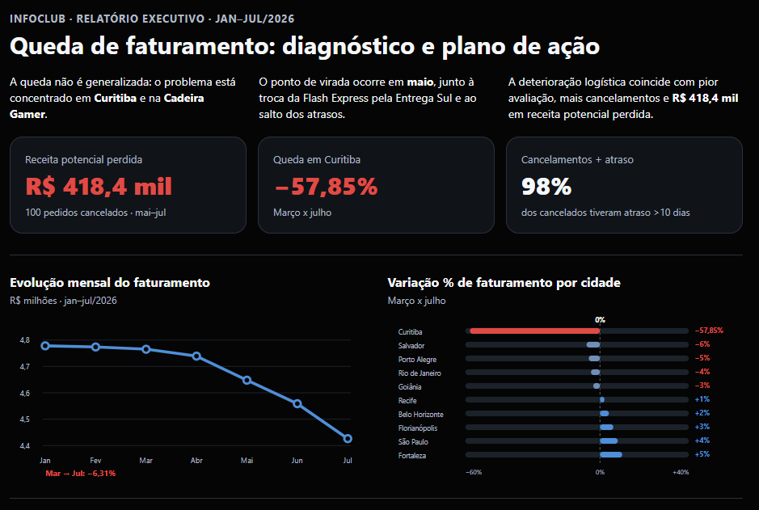
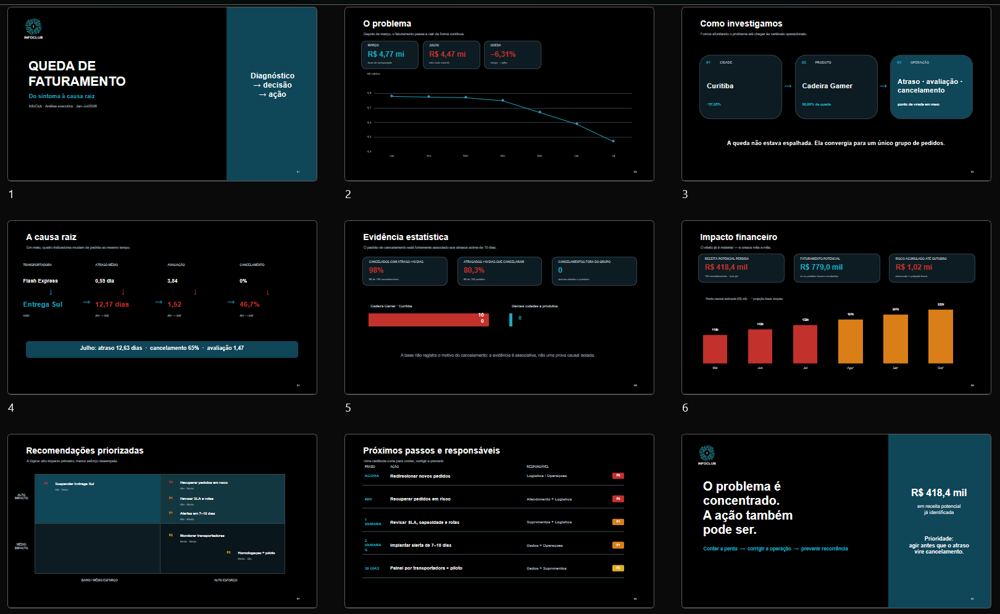
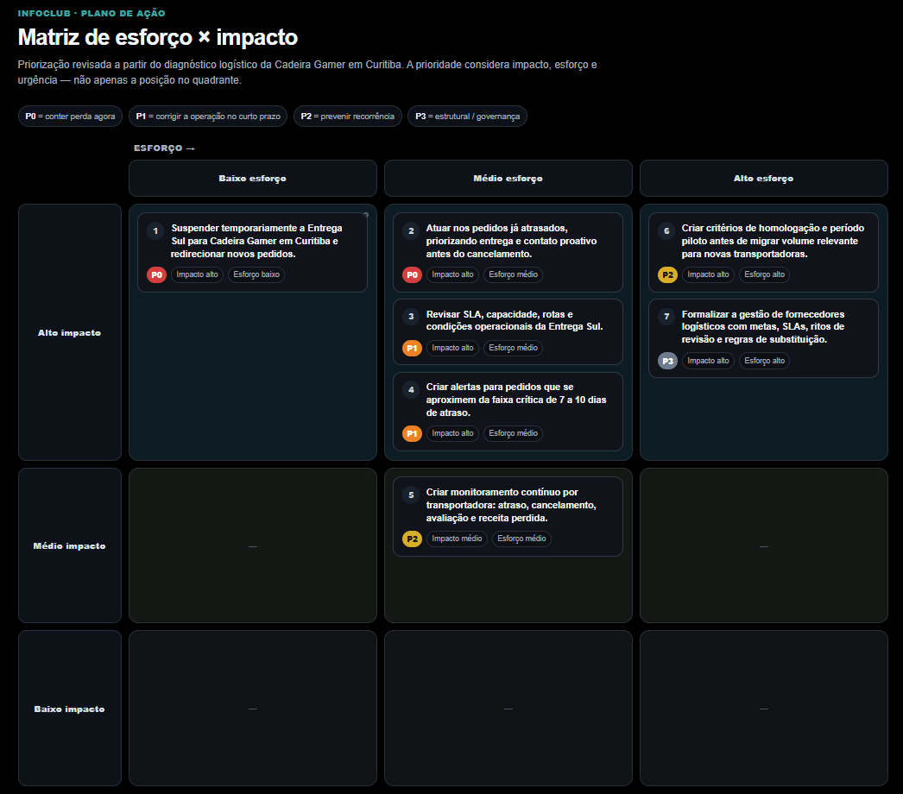
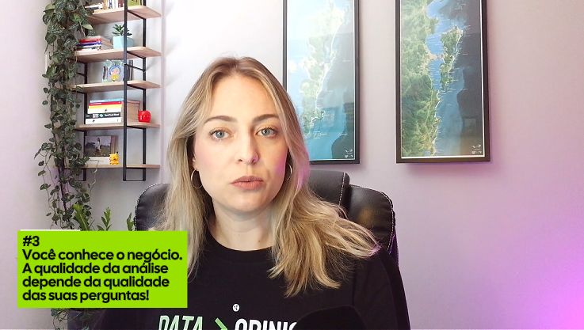

Conhecendo
os dados
Entenda a planilha antes de tirar qualquer conclusão.
01 análise prática
Aprenda a usar a Inteligência Artificial para investigar problemas, encontrar padrões e transformar dados em decisões.
Um curso direto ao ponto para profissionais que trabalham com planilhas — em qualquer área.

02 se isso acontece com você
Você recebe uma planilha cheia de informações e, logo depois, alguém pergunta:
Transformar dados em respostas claras exige método, pensamento analítico e boas perguntas.
É isso que você vai aprender.03 a tecnologia no lugar certo
A IA pode analisar grandes volumes de dados, gerar gráficos, testar hipóteses e criar relatórios. Mas ela precisa da sua orientação para chegar a uma conclusão que realmente faça sentido.
04 um caso prático, do começo ao fim
Você acompanha a investigação da empresa fictícia InfoClub e aprende a conduzir uma análise com IA até transformar a descoberta em recomendações priorizadas e materiais de comunicação para a liderança.
05 veja o resultado na prática
Durante o curso, a IA ajuda a transformar uma planilha em análises, relatórios, gráficos e recomendações que você consegue explicar.



06 o método
Você aprende uma linha de raciocínio que pode repetir nas suas próprias planilhas, usando ChatGPT, Gemini, Copilot, Claude ou outra ferramenta de IA.
07 por dentro do curso
Conteúdo objetivo, exemplos práticos e prompts para adaptar a sua rotina.
Entenda a planilha antes de tirar qualquer conclusão.
Comece pela pergunta certa: peça contexto, não conclusão.
Aprenda a isolar o problema em recortes inteligentes.
Investigue mudanças, padrões e evidências.
Coloque um número no problema para orientar a decisão.
Use impacto x esforço para priorizar o que fazer primeiro.
Transforme descobertas em relatório e visualização.
Crie uma apresentação para contar a história dos dados.
Proteja as informações antes de enviar sua planilha.
Leve o método completo para as próximas análises.
08 feito para a sua rotina
O curso é para profissionais que usam planilhas e que precisam investigar informações, responder perguntas do negócio e apresentar resultados com mais clareza.
É um método prático para usar IA com mais intenção, senso crítico e segurança.

 JÚLIA ERTEL
JÚLIA ERTEL09 quem conduz
Júlia Ertel é analista de dados e criou este curso para mostrar, de forma descomplicada, como profissionais que trabalham com planilhas podem usar a IA para investigar problemas e gerar valor a partir dos dados.
Júlia Ertel tem vinte anos de experiência profissional, com uma trajetória que combina comunicação, negócios e tecnologia.
Há cerca de cinco anos, direcionou sua carreira para a área de dados e, desde então, vem se especializando em Análise de Dados, Business Intelligence, Analytics Engineering e, mais recentemente, Inteligência Artificial aplicada à análise de dados.
É pós-graduada em Análise de Dados e Gestão Estratégica de Projetos e atualmente amplia sua formação nas áreas de Arquitetura e Governança de Dados e Inteligência Artificial aplicada aos negócios.
Ao longo da carreira, atuou em médias e grandes empresas nas áreas de comunicação e marketing, gestão de projetos, análise de dados e Business Intelligence, além de desenvolver treinamentos para profissionais e equipes.
Possui certificações em Power BI, Databricks, Microsoft Azure e dbt, além de formação em Analytics Engineering. Sua atuação combina conhecimento técnico, visão de negócio e comunicação, com foco em transformar dados e novas tecnologias em análises mais claras e melhores decisões.
10 comece agora
Tenha acesso a um curso prático para descomplicar o uso da IA e encontrar soluções reais para a análise de dados.
acesso completo ao curso
Pagamento seguro pela Hotmart
Quero começar agora ↗Você tem 7 dias para experimentar.
Se o curso não fizer sentido para você, basta solicitar o reembolso dentro do prazo.
11 dúvidas frequentes
Não. O curso foi desenvolvido para quem trabalha com planilhas e quer aprender a analisá-las com mais clareza e segurança.
Não. O foco está no raciocínio analítico, na formulação de perguntas e no uso prático da IA.
Sim. As aulas usam exemplos com o ChatGPT, mas o método pode ser adaptado para Gemini, Copilot, Claude e outras ferramentas de IA.
O foco não é ensinar fórmulas básicas de Excel. Você vai aprender a usar IA para investigar e comunicar dados presentes em planilhas.
Sim. Todos os prompts utilizados nas aulas estarão acessíveis para você adaptar à sua rotina.
O acesso ao curso é indeterminado. Você poderá assistir às aulas no seu ritmo.
Sim. Você terá acesso ao canal de suporte disponibilizado junto ao curso.
→ pronto para começar?
Acesso indeterminado · Planilha e prompts inclusos · Garantia de 7 dias